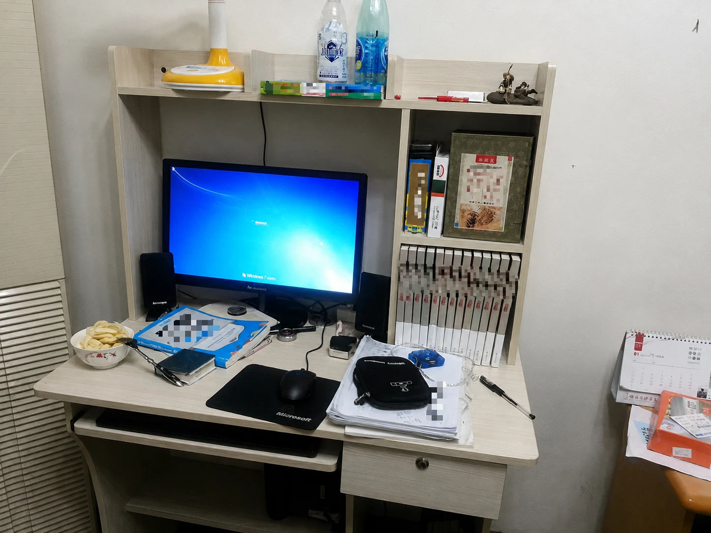
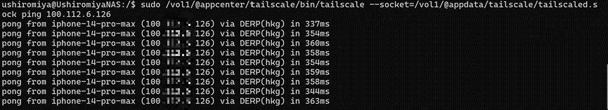
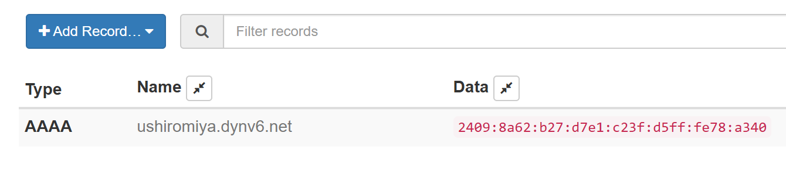
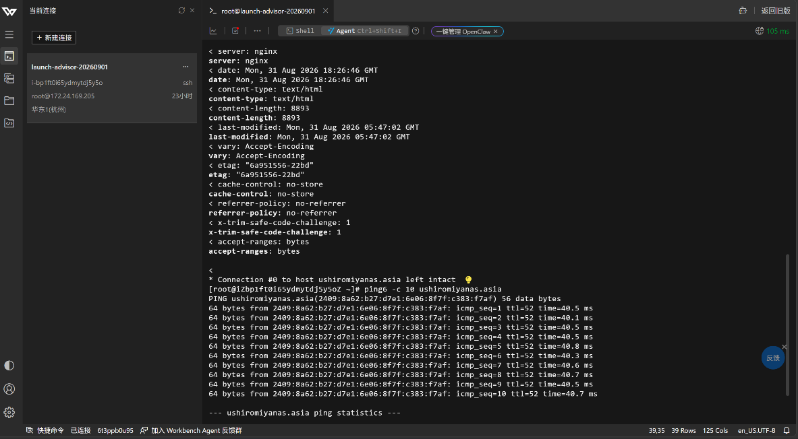
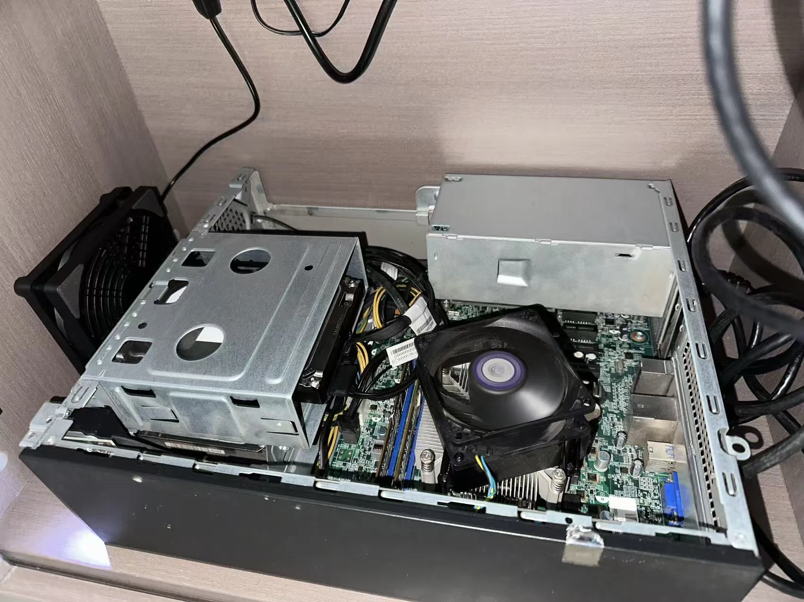

{kind=link}

2014年我小学四年级时，父母在老家为我购置了一台联想台式机，一直到我高中之前，这台电脑都是我IT技术的启蒙老师，从自学Dreamweaver搭建个人博客、编一些简单的java程序，再到下载各种包括Minecraft在内的无数单机游戏进行游玩，它伴我度过了无数假日时光，但初三以后随着学习压力的增大，回老家的次数逐渐减少，这台电脑便一直闲置。光阴荏苒十二年，一直到最近我再次想起它时，已然覆盖了一层厚厚的油污和灰尘，同时也完全打不开机了。我不想让这个“启蒙老师”沦落到废品站的结局，但我也深知十几年前的硬件已经无法支持今天的工作要求，正好我一直对最近风靡的NAS（Network Attached Storage）技术感兴趣，对硬件要求也不高，网上成品NAS如绿联、群晖都溢价严重，我更希望把预算花在“刀刃”即硬盘上，基于此我便萌生了折腾一台diy NAS的想法。
一、前期硬件维修及升级
当我用酒精湿巾小心擦拭了机器外身，我遇到了第一个问题：十几年的岁月和一楼潮气的侵蚀已经让这台老古董台式机无法开机了。我发现按下电源键后，机箱内部的风扇依然能够转动，但屏幕始终没有任何显示，连机箱上的电源指示灯也没有正常亮起。我判断机器并非完全没有供电，更像是通电之后没能顺利完成主板的开机自检（POST）。 对于一台长期闲置、又一直存放在较为潮湿环境中的老电脑来说，内存金手指氧化、接口接触不良以及 CMOS 电池耗尽，是Gemini推荐的排查方向。
{kind=link}
{kind=link}
我首先把怀疑对象放在了内存上。断开电源后，我拆下内存条，用橡皮反复擦拭底部的金手指，希望去掉长期存放后形成的氧化层，再重新插紧并尝试开机，我猜测长期闲置和潮湿环境确实可能让内存的金手指发生氧化，导致硬件无法识别。然而，在重新插拔和清理内存之后，风扇依旧转而按下电源键依旧无法开机。
一番折腾没有效果，我把目光转向了主板。对于这种多年没有通电的电脑，主板上的 CMOS 纽扣电池同样值得怀疑。长时间闲置后，电池很可能已经彻底耗尽。我换上了一枚新的 CR2032 换了上去。戏剧性的一幕发生了：换上这颗售价不过几元钱的纽扣电池之后，这台折腾了我半天、甚至被电脑店老板判定主板损坏的“死刑”的老电脑居然重新点亮了。
历经十多年的时光，万幸硬盘没有受潮，电脑依旧是那个熟悉的桌面，桌面还留着几款小时候没完玩的老游戏。我用图吧工具箱简单测了一下电脑的硬件：
| 项目 | 原机配置 |
|---|---|
| CPU | Intel Celeron G1820 |
| CPU规格 | 2核2线程，2.70 GHz，22 nm |
| 内存 | 4 GB DDR3 1600 MHz |
| 主板 | Lenovo SHARKBAY（Intel Lynx Point 平台） |
| 显卡 | Haswell Integrated Graphics Controller (64MB) |
| 硬盘 | WDC WD5000AAKX-O8U6KKO (500GB/7200) |
| 网卡 | Realtek RTL8168/8111/8112 千兆以太网 |
就这样，这台2014年生产的联想H3050台式机重新焕发了生命，既然准备让它承担 NAS 的工作，我还是决定趁这个机会对原有硬件进行一些升级。
原机搭载的是一颗Intel赛扬G1820，双核双线程，主频3.30GHz，同时只有4GBDDR3内存。对于最基础的文件共享来说，这套配置其实也能运行，但考虑到之后还可能安装Docker或者小型服务器，4GB内存多少有些捉襟见肘。因此，我首先又增加了一条内存，将整机容量提升到了8GB。这块联想原装主板只能兼容第四代Haswell处理器，大多数现代低功率cpu都无法支持。考虑到这毕竟是一台十多年前的品牌机，原装电源和散热规格都比较有限，我并没有选择功耗更高的i7，而是采纳了ai推荐的Core i5-4570S。
{kind=link}
{kind=link}
我在闲鱼通过“捡垃圾”的方式买了一颗旧u装了上去，完美契合主板，从功耗来看，i5-4570S 并不是特别夸张的升级，原机的 240 W 电源在不增加高功耗显卡的情况下依然有足够余量，因此没有必要为了更换 CPU 连电源一起更换，但更换已经干涸的散热硅脂还是必要的。i5-4570S 当然已经是一颗非常古老的 CPU，但对于diy NAS 而言，它提供的性能已经相当充裕。更重要的是，这次升级的成本很低，也没有追求性能的必要，毕竟我的目的并不是造一台高性能服务器，而是尽可能利用手头已有的旧硬件，让一台原本准备吃灰的电脑重新发挥价值。
{kind=link}
{kind=link}
既然是存储系统，那么原先旧机器的500G西数蓝盘肯定是不够用的，因此，我决定另外购置一块大容量机械硬盘作为主要的数据盘。我主要纠结于两个方案：西部数据紫盘和希捷酷狼。西数紫盘本身主要面向监控录像设备，设计目标二十四小时的视频流写入，从这一点来看，它其实同样很适合长期开机。相比之下，希捷酷狼本身就是针对 NAS 设计的机械硬盘，NAS 的工作负载并不只有连续写入，还会涉及大量文件的读取、修改、索引以及多设备同时访问。众所周知最近硬盘涨价很厉害，最终我选择了 4 TB 的希捷酷狼（IronWolf）作为数据盘，同时预留了sata接口，等硬盘降价可以接硬盘盒扩展。这也是整个改造过程中我少数没有一味追求“能省则省”的地方。CPU、内存甚至整台主机都可以利用十多年前留下来的旧硬件，但硬盘毕竟直接承担着保存数据的任务。相比为了省一点预算去选择来源不明的二手盘，或者使用定位不同的监控盘，秉承“数据无价”的原则，我更愿意在数据盘上稍微多投入一些。
二、NAS系统选择和安装
市面主流的NAS系统主要有：黑群晖（Synology），绿联，飞牛OS，我最终选择的 NAS 系统是新起之秀飞牛OS（fnOS）。对于我这种第一次正式搭建 NAS 的情况来说，相比完全依赖命令行配置 Linux，飞牛 OS 的图形化管理方式显然更容易上手。制作好系统安装 U 盘之后，我把它插到这台联想老主机上，并进入启动菜单。此时系统同时识别出了两个看起来几乎一样的 U 盘启动项：
Legacy: KingstonDataTraveler G2 1.00UEFI: KingstonDataTraveler G2 1.00
一开始我还以为教程中提到的 Graphical Install 是 BIOS 中的某个选项，找了半天也没有发现。后来才弄明白，Legacy 和 UEFI 只是两种不同的系统启动方式，而 Graphical Install 属于飞牛 OS 安装镜像自己的启动菜单。这也是我第一次比较直观地接触 Legacy 与 UEFI 的区别。Legacy 属于传统 BIOS 启动方式，通常与较老的 MBR 分区方案联系在一起；UEFI 则是较新的固件启动方式，更常与 GPT 分区方案配合使用。由于这台联想主机同时支持两种启动方式，因此同一个 Kingston U 盘在启动菜单中出现了两个入口。之后飞牛 OS 正式进入图形化安装流程也就不多赘述。相比前面更换 CPU、内存和硬盘，安装系统看起来似乎只是软件操作，但对于第一次给老品牌机安装 NAS 系统的我来说，反而出现了不少陌生概念。Legacy、UEFI、MBR、GPT，再加上 BIOS 启动顺序，一开始确实让我有些摸不着头脑。
{kind=link}
{kind=link}
花费一小时左右，我在原来的西数500G蓝盘上顺利配置了飞牛OS系统。
三、NAS网络配置
等到我配置完NAS系统后，才进入到了整个diy最难、也是最让人头疼的环节，配置网络环境，准确来说是配置公网。一般的家用NAS因为安全性目的只会在局域网内使用，用户往往利用其实现家庭影院或回家后手机同步等功能，在局域网里，远程访问非常简单，直接通过 NAS 的局域网 IP 访问即可，速度最快，也最稳定。实际上，在同一局域网中完全没有必要让流量再绕一层 Tailscale。但我希望能在上海的学校跨省异地访问成都的NAS，这就要求NAS必须接入公网。
一开始，我尝试使用 Tailscale。它会在不同设备之间建立一个虚拟网络，NAS、电脑和手机分别获得一个 100.x.x.x 的虚拟地址，只要登录同一个 Tailscale 网络，就可以像处于同一个局域网一样互相访问。
接下来，我开始测试 Tailscale 是否真正建立了 P2P 直连。判断的方法并不复杂。使用 tailscale ping 或 tailscale status 时，如果结果出现 direct，说明两台设备已经直接通信；如果显示 DERP 或 relay，则说明数据需要经过 Tailscale 的中继服务器转发。在局域网测试时，我曾经看到：
active; direct 192.xxx.0.xx:xxxxx这意味着 Tailscale 已经成功建立了点对点连接，只不过两台设备本来就在同一个家庭网络中，因此实际走的仍然是本地局域网地址。
但真正从外网连接时，情况就没有这么理想了。
{kind=link}

当我从 NAS 向 iPhone 测试连接时，返回结果变成了类似：
pong from iphone-14-pro-max (...) via DERP(sin) in 200ms其中的 DERP(sin) 表示数据并没有直接从 NAS 到达手机，而是经过了 Tailscale 位于新加坡的 DERP 中继节点。这样的连接虽然依然能够正常使用，但延迟明显升高，速度也会受到中继线路的影响。
于是，我又开始研究怎样让 Tailscale 成功“打洞”。
Tailscale 的理想状态是利用 UDP 在两端之间建立直接连接。如果成功，tailscale status 中会出现 direct；如果打洞失败，则会退回 DERP 中继。路由器开启 UPnP / NAT-PMP 等自动端口映射功能，可以提高建立直连的成功率。
折腾到这里之后，我突然意识到了一件事：
我家的宽带其实有公网 IPv6。
这意味着理论上我甚至不一定需要依靠 Tailscale 来进行内网穿透。
IPv4 家庭宽带通常需要 NAT，因此外网无法直接访问家中的设备；IPv6 则不同，只要运营商正确下发 IPv6 前缀，NAS 本身就可以获得一个全球可路由的 IPv6 地址。飞牛 OS 的公网 IPv6 配置思路也正是：先让 NAS 获得公网 IPv6，然后处理防火墙入站规则，最后利用 DDNS 解决地址变化问题。
我的家庭网络并不是简单的“光猫 + 普通无线路由器”，而是使用了 AP 面板，因此一开始我还担心这种结构是否会影响 IPv6。实际需要处理的核心仍然是上游设备是否能够正确下发 IPv6 前缀以及路由通告，而 AP 面板本身主要承担网络转发，并不是问题的关键。
最终，飞牛 OS 成功获得了公网 IPv6 地址。
不过，“拿到 IPv6”并不等于“外网一定能访问”。IPv6 虽然不需要 IPv4 那样做 NAT 端口转发，但路由器和 NAS 自身的防火墙仍然可能阻止外部主动连接。因此，我又继续检查了 IPv6 网关、RA 路由通告以及路由器的 IPv6 入站策略。飞牛 OS 的排查记录里也明确提到，真正对外提供服务时，需要确认 IPv6 路由正常，并针对所需服务端口配置入站放行。
公网 IPv6 解决了“能不能直接找到 NAS”的问题，但又出现了新的麻烦——IPv6 地址实在太长了。类似：
2409:xxxx:xxxx:xxxx:xxxx:xxxx:xxxx:xxxx这样的地址，我当然不可能每天手动输入。
而且家庭宽带分配的 IPv6 前缀还可能随着重新拨号或路由器重启而发生变化。因此最后还需要用到 DDNS（动态域名解析）。
第一次走错方向：在 TP-Link 路由器里配置 DDNS。
我最先想到的是家里的 TP-Link 路由器。既然路由器后台本身就提供“动态 DNS”功能，那么直接在那里申请一个域名，似乎是最省事的办法。然而刚开始创建，路由器就给了我一个非常简洁、也非常没有帮助的报错：创建域名失败，error: -20000
于是我开始排查域名是否重名、TP-Link ID 是否正常登录、路由器 DNS 是否异常，甚至还尝试退出云账号重新登录、修改 DNS 服务器以及检查路由器固件。折腾了一圈之后，我才发现真正的问题其实比这个错误码本身更根本：
我的思路从一开始就搞错了。
我想使用的是公网 IPv6，而不是公网 IPv4。
在 IPv4 网络中，家里的设备通常共享路由器 WAN 口上的一个公网地址，因此把 DDNS 配置在路由器上，再通过 NAT 和端口映射找到内网 NAS，是很自然的做法。
IPv6 却完全不同。
我的 NAS 自己就拥有公网 IPv6，而且路由器的 IPv6 和 NAS 的 IPv6 并不是同一个地址。如果我的目标是让域名始终指向 NAS，那么真正需要向 DNS 服务商报告地址的，也应该是 NAS 本身。于是，我放弃继续纠结 TP-Link 自带 DDNS，转而把 DDNS 服务直接部署到了飞牛 OS 上。
{kind=link}

我的做法是让 DDNS 自动检测 NAS 当前的公网 IPv6，并更新域名的 AAAA 记录。我在阿里云上花几块钱买了一个垃圾域名，这样，即使以后 IPv6 地址发生变化，我也只需要记住一个固定域名，而不需要重新查询那一长串地址。飞牛 OS 的配置记录中，也是通过 DDNS 将域名的 AAAA 记录动态指向当前 IPv6。
解决了地址问题以后，下一步就是如何在 iPhone 上真正浏览 NAS 中的文件。
我最开始的想法很直接：既然已经有公网 IPv6，那么是不是可以直接把 SMB 暴露到公网，然后在 iPhone 自带的“文件”App 中挂载 NAS？
从技术上讲确实可以，但我最终没有把这种方式作为首选。SMB 本来主要用于局域网文件共享，直接把 445 端口长期暴露在公网并不是一个理想的安全方案。
因此，我更倾向于让公网真正开放的服务尽可能少。
如果只是通过浏览器管理飞牛 OS，可以使用 HTTPS；如果需要从 iPhone 浏览、上传和下载文件，则可以进一步使用 WebDAV 等适合公网环境的协议，并配合 HTTPS 加密。
这时整个访问链路实际上变得非常简单：
iPhone → DDNS 域名 → DNS AAAA 解析 → 家中 NAS 的公网 IPv6 → 指定服务端口 → 飞牛 OS
整个过程中没有传统意义上的“内网穿透服务器”，数据也不需要经过第三方中继。这和之前使用 Tailscale 时的体验有明显区别。Tailscale 如果成功建立 Direct 连接，同样可以获得很好的速度；但如果 NAT 打洞失败，就可能退回 DERP 中继，而我此前测试 iPhone 时就曾经出现过这种情况。判断是否建立直连，可以通过 tailscale status 查看 direct 或 relay 状态。
公网 IPv6 则不存在 NAT 打洞这一环节。只要 iPhone 所处的网络同样支持 IPv6、家里的路由器允许对应的 IPv6 入站连接，并且 NAS 服务正常监听，理论上就是端到端直连。
当然，“拥有公网 IPv6”并不意味着 NAS 上的所有端口都应该直接暴露出去。IPv6 没有传统 IPv4 NAT 这一层天然隔离，因此路由器的 IPv6 防火墙反而更加重要。我最终的思路是：只开放真正需要的服务端口，其余入站流量继续由防火墙拦截。之前的排查记录中，我也是通过手机关闭 Wi-Fi、切换到移动数据，然后从真正的外部 IPv6 网络测试飞牛 OS 是否可以访问。
对于 iPhone，我最后形成的使用习惯则比较简单：在家时直接通过局域网 IP 访问 NAS，不绕任何额外网络层；在外时，通过 DDNS 域名 + 公网 IPv6 访问；如果所在地的网络没有 IPv6，则保留 Tailscale 作为备用。这样既能够获得公网 IPv6 直连的速度，也不至于因为某个外部网络恰好不支持 IPv6，就彻底失去访问 NAS 的能力。
这大概也是自己搭 NAS 最有意思的地方之一——最初只是为了得到一块能联网的“硬盘”，最后却被迫把整个家庭网络从头学了一遍。
四、常见docker的配置
NAS的独特之处就在于其多样化的docker，我真正想长期使用的功能之一，就是把 iCloud 照片自动备份到本地。相比依赖手机端手动上传，我更希望 NAS 自己定期从 iCloud 拉取照片，这样即使手机不在家、没有打开飞牛 App，备份也能在后台自动完成。
于是我开始折腾 icloudpd。
最开始的思路很直接：在飞牛 OS 的 Docker 里运行 boredazfcuk/icloudpd，把 NAS 上的文件夹挂载到容器里，再通过 Apple ID 登录。记录里最初的配置就是将照片目录映射到 /home/user/iCloud，并设置 Apple ID、同步间隔与时区。
但第一次真正执行时，就遇到了 Docker 权限问题。
当时普通用户直接运行 docker run，终端返回：
Cannot connect to the Docker daemon at unix:///var/run/docker.sock后来发现并不是 Docker 本身坏了，而是当前 SSH 登录用户没有直接操作 Docker daemon 的权限。于是后续相关命令改为使用 sudo docker ... 执行。
解决 Docker 权限后，又碰到了更麻烦的问题。
容器初始化时日志出现：
su: unknown user user
ERROR Keyring file does not exist. Please try again这意味着容器内部用于认证的用户环境和 keyring 没有正确建立，Apple ID 的登录凭证也就无法正常保存。记录中当时尝试过预先建立 python_keyring 目录、修改目录权限，以及显式指定 user_id 和 group_id。
接下来为了绕开初始化脚本的问题，我又尝试直接调用底层认证程序，而不是完全依赖 sync-icloud.sh。
例如直接进入容器调用 iCloud 认证工具，通过 Apple ID 密码以及 iPhone 上收到的六位双重验证码完成登录，同时把凭据保存到 keyring。
真正认证成功之后，icloudpd 才终于开始读取 iCloud 照片库。
不过，真正的大规模同步仍然没有一次成功。
当时我的 iCloud 照片库大约有 25245 个照片和视频文件。下载刚开始时，进度只有几十个文件，就又出现了中断。日志中可以看到，程序在读取远程文件时被 KeyboardInterrupt 打断。
于是我又尝试绕过原来的容器启动脚本，直接把 Docker 的 entrypoint 改成底层 icloudpd 可执行程序。
这样做的目的，就是尽量减少原 Docker 镜像附带脚本与飞牛 OS 环境之间的兼容问题。记录中后来确实尝试了用：
--entrypoint /opt/icloudpd/bin/icloudpd直接启动下载器，并挂载原来的照片目录与配置目录。
不过这里又踩了一个参数坑：
unrecognized arguments: --watch-interval 86400也就是说，那个版本的底层程序并不接受我当时填写的定时参数，于是又需要去掉或调整这一项。
虽然整个过程相当折腾，但最终成功下载后，icloudpd 会识别已经存在的文件，而不是每次都从头下载。
iCloudPD 是整个 NAS 配置过程中最折腾我的服务之一。从 Docker 权限、容器内部用户、Keyring、Apple ID 双重验证，到启动脚本和参数兼容问题，几乎每一步都踩过坑。但当二万多张照片开始一张一张从 iCloud 下载到家里的机械硬盘时，我第一次真正感觉到这台 NAS 已经不只是一个“能通过网络访问的硬盘”了。
它开始真正承担自己的任务：把原本只存在于云端的数据，自动保存到我能够实际掌控的本地存储中。这也是我整个NAS配置的核心思想，那就是将数据握在自己的手里，包括后面配置的memo，Navidrome等，难道是市面上的商业软件如网易云，爱奇艺等不好用吗？其实并不是，即使吹毛求疵说的“真4k电影”其实视觉效果也没提升多少，但是数据掌握在自己手里和云端的感觉是不一样的，网剧会随时因版权问题而下架，运营商会随时跑路，但NAS不同，硬盘在自己家里，只要定期做好备份以及硬盘健康检测，那么这些数据就会成为我永久的数字资产。
{kind=link}
{kind=link}
五、扫尾工作
完成公网 IPv6、DDNS-go 和 iCloudPD 的配置之后，这台 NAS 已经基本具备了我最初想要的功能。不过真正准备长期使用时，我还是陆续发现了一些不起眼的小问题。因为我长期在学校与机器相隔上千公里，以后使用中出现故障我往往不能第一时间现场解决，所以我必须保证机器可以实现极高的自动化和远程检修，这些小问题虽不会影响 NAS 能不能开机，却直接决定了这台机器日后用起来是否稳定、方便。
首先是一个很奇怪的网络问题：
当时 ushiromiyanas.asia 已经能够在手机和其他电脑上正常访问，但偏偏有一台 Windows 电脑一直提示“响应时间太长”。既然其他设备都能打开 NAS，我基本可以确定 NAS 和 DDNS 本身没有出问题，故障应该出在这台电脑本地。
最后解决问题的命令异常简单：
ipconfig /flushdns执行以后，NAS 立刻又可以访问了。
原因其实就是 Windows 缓存了之前的 IPv6 地址。DDNS-go 已经把域名更新到了 NAS 新的 IPv6，但电脑仍然拿着旧的 DNS 缓存继续访问旧地址，于是请求自然一直超时。清除 DNS 缓存以后，系统重新查询 AAAA 记录，拿到新的 IPv6，访问便恢复正常。
这也让我重新调整了域名的 TTL。DDNS 本身解决了“IP 变化以后自动更新域名”的问题，但如果客户端把旧记录缓存得太久，更新再快也没有意义。因此，对于这种动态 IPv6 域名，DNS TTL 没有必要设置得特别长。
{kind=link}

第二件事情则是 HTTPS。
最开始，我一直通过 HTTP 访问飞牛 OS。功能本身没有问题，但浏览器始终会显示“不安全”。在家里的局域网中，这一点或许还能接受，但我搭建远程访问的目的之一就是以后人在上海，也能通过学校网络访问家里的 NAS。
这时继续使用明文 HTTP 显然就不太合适了。
于是我又给自己的域名申请了 SSL/TLS 证书，并将证书绑定到 NAS 服务上。这样，浏览器与 NAS 之间传输的账号、密码和文件都能够通过 HTTPS 加密。相关配置的思路就是申请针对 ushiromiyanas.asia 的证书，然后将它与实际的 NAS 服务关联起来。
申请证书的过程也并非一次成功。
由于我的域名托管在阿里云，自动申请证书时需要调用阿里云 DNS API 完成 DNS 验证。期间我碰到过：
Cert Apply Error以及：
acme: error presenting token: provider error最后排查的重点集中到了 AccessKey、DNS API 权限以及相关网络访问策略上。
折腾完成后，证书终于成功签发。
不过紧接着我又踩了一个很典型的坑：HTTP 和 HTTPS 并不是在同一个端口上简单换一个前缀就行。
我一度直接把：
http://……:5666改成：
https://……:5666结果浏览器提示服务器发送了无效响应。
后来才意识到，如果 5666 本身监听的是 HTTP，那么强行给它套上 https://，相当于用 TLS 协议去和一个只接受普通 HTTP 的服务说话，当然无法正常通信。必须确认 NAS 或反向代理真正监听的 HTTPS 端口，再使用对应的协议和端口组合。
相同的问题也出现在远程挂载上。
为了让 NAS 在 Windows 中使用起来更像普通硬盘，我后来使用 RaiDrive 挂载远程目录。既然网页访问已经从 HTTP 切换到了 HTTPS，RaiDrive 中的连接配置也必须同步修改，否则虽然浏览器已经加密，文件挂载仍然可能继续走原来的明文连接。
除此之外，硬件方面我也做了一些很不起眼但必要的检查。
机械硬盘毕竟要 7×24 小时工作，因此我开始关注它的安装姿态、固定方式和温度。相比“必须正面朝上”之类的说法，我后来真正关心的反而是更实际的事情：硬盘是否固定牢靠、有没有明显震动、周围风道是否通畅，以及运行温度是否合理。
尤其是这块新装上的希捷硬盘，在连续读写时摸起来明显发热。单靠“烫不烫手”其实很难判断硬盘状态，因此最终还是应该通过 S.M.A.R.T. 查看实际温度以及健康指标。
当时还有一个数字差点把我吓了一跳——希捷硬盘的 Raw Read Error Rate 当前值显示为 74。
最后，一些原本以为“搭好以后就不用再碰”的东西，实际上仍然需要偶尔维护。比如 Apple 的认证状态可能需要重新验证；DDNS-go 需要保证长期运行；SSL 证书要正常续期；机械硬盘需要定期查看 SMART；NAS 系统、Docker 服务以及重要文件本身也都需要备份。
六、结语：给旧电脑一次第二人生
如果把整次 DIY 回头看一遍，我最大的感受大概是：
真正耗时间的并不是把硬盘拧进机箱，也不是把 CPU 换成 i5-4570S。硬件装好可能只需要半个下午，后面的网络、域名、IPv6、HTTPS、Docker、iCloud 同步和各种不起眼的兼容问题，才占据了绝大部分时间。但也正是这些问题解决以后，这台十多年前几乎准备报废的电脑，才真正完成了它的第二次生命。
如果单纯计算时间成本，那么 DIY NAS 显然算不上“划算”。
购买一台群晖、绿联或者极空间，插入硬盘，按照提示点几下，也许一个下午就能完成绝大多数事情。而我却为了一个端口、一个 DNS 记录或者一条 Docker 报错，在终端前折腾几个小时。
但如果真的只想省时间，我大概从一开始也不会选择 DIY。
这个过程真正有意思的地方，恰恰就是那些问题本身。
我第一次真正理解 Legacy 和 UEFI 的区别，第一次认真研究公网 IPv6，第一次知道 Tailscale 为什么有时 Direct、有时又会经过 DERP，也第一次真正弄明白 DNS、DDNS、AAAA 记录、TLS 证书和 Docker 容器到底分别在做什么。
NAS 最后只是搭建出来的“成品”罢了。
最后附上结算画面：
{kind=link}
